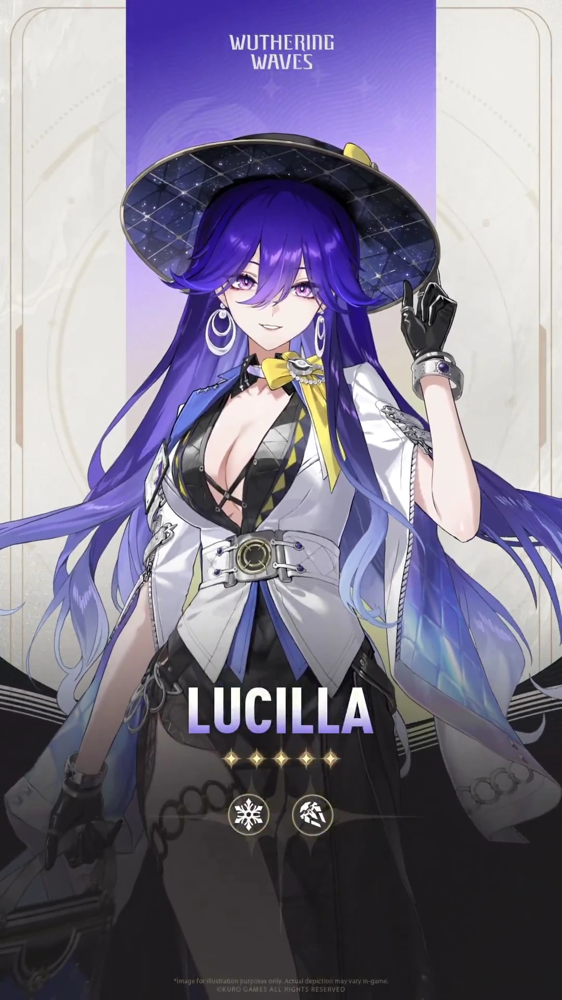

Lucilla, presidenta de la Academia Startorch e idealista con los pies en la tierra. Vela silenciosamente por sus estudiantes mientras se elevan para desafiar al cielo mismo.

Lynae, estudiante del Programa Preparatorio de la Academia Startorch, es un espíritu libre con una pasión arrolladora. Conduce a toda velocidad y se expresa con audacia. Su mayor deseo es que su tranquila vida universitaria dure para siempre.

Mornye es investigadora del Colectivo Spacetrek y profesora en la Academia Startorch. Es muy inteligente, pero poco habladora. Persigue con determinación su sueño: trascender los límites del espacio-tiempo y contemplar el mundo más allá en todo su esplendor.